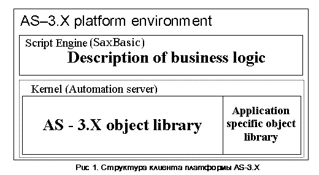

Архитектура платформы
Платформа AS-3.X реализована в рамках двухуровневой архитектуры клиент-сервер. В
качестве сервера базы данных (БД) использована СУБД MS SQL Server 2000 или 2005.
Применение данной СУБД дает клиентовскому ПО возможность получения достаточной
производительности системы, позволяет защитить информацию от
несанкционированного доступа, обеспечивает целостность БД.
Клиентовское ПО обеспечивает построение пользовательского интерфейса и управление бизнес-логикой приложения, которое осуществляется на основе описаний объектов системы, расположенных на сервере БД.
Взаимодействие клиентовского ПО с сервером БД практически полностью происходит через библиотеку хранимых на сервере процедур (stored procedure), что позволяет увеличить производительность системы и одновременно уменьшить нагрузку на сетевую инфаструктуру. В качестве библиотеки доступа к серверу БД использована RDO 2.0 (Remote Data Objects), которая в свою очередь основана на интерфейсе ODBC.
Клиент реализован на Visual Basic 6.0 и представляет из себя WIN32 приложение. Объектная билиотека системы доступна через механизмы OLE автоматизации интерпретатору SaxBasic, что позволяет описывать бизнес-логику приложения (Рис 1). Другими словами, описания объектов транслируются ядром системы, и оно, заранее определенным образом, генерирует события, которые обрабатываются сценарием в среде SaxBasic.

При разработке приложения существует возможность расширения билиотеки ядра AS-3.X путем добавления дополнительных классов объектов, что позволяет расширить функциональность и решить проблему узких мест в производительности приложения.
См.также